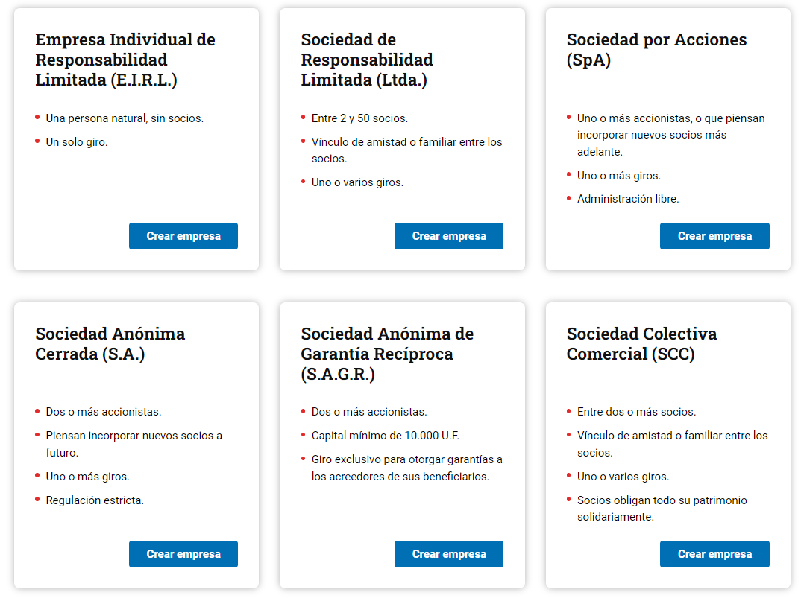
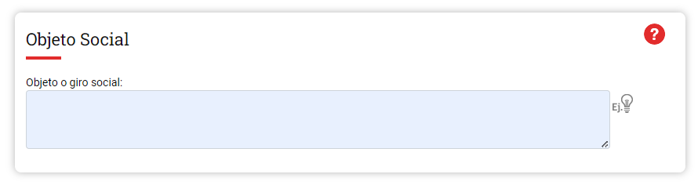
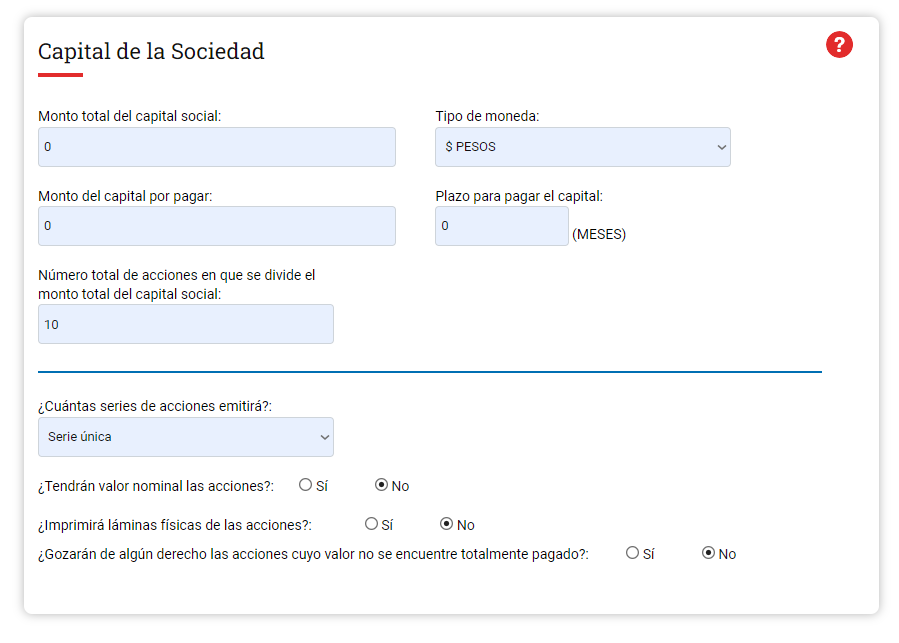
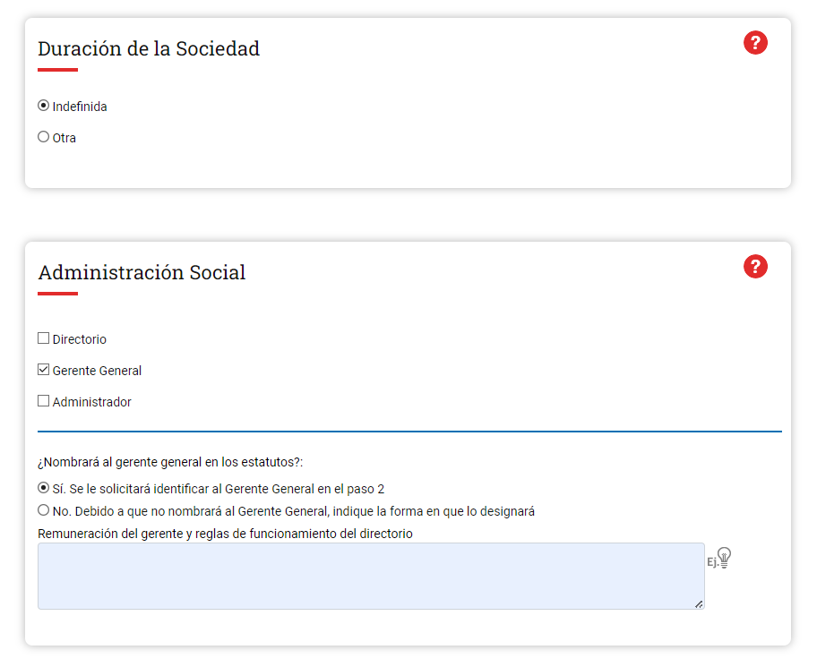
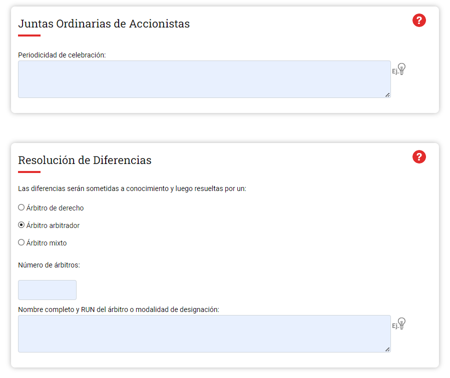

Advertencia: Se recomienda contar con un profesional de contaduría para realizar el proceso ante algunas dudas.
Link para el registro: https://www.registrodeempresasysociedades.cl
1. Ingresa en el link indicado y dirígete a la sección de “Constituye tu empresa” y presiona el botón de constituir.

Nos enfocaremos principalmente en la conformación de empresas como sPA y ltda.
Explicación y diferencias: https://juiciofacil.cl/emprende-facil-sociedad-spa-o-sociedad-de-responsabilidad-limitada-cual-me-conviene/
Descripción: Se refiere al nombre de la empresa, el cual deberá concluir con la expresión "SpA".
Ejemplos:
Descripción: Es el nombre que puede utilizar alternativamente la empresa, para fines publicitarios, comerciales y ante los bancos. Debe terminar con la palabra "SpA".
Ejemplo: AGRICOLA Los Muermos SpA
Descripción: Es el domicilio que se registrará en el SII. Además, este domicilio determinará qué sucursal del SII se le asignará a su sociedad (en dicha sucursal deberá retirar el RUT).
Descripción: Se refiere al lugar donde funcionará la empresa, no es necesario que sea detallado. Completar al menos, la ciudad.
Descripción: Se refiere a la actividad o rubro a que se dedicará la sociedad. Se admite la posibilidad de contemplar uno o más objetos específicos.
Descripción: Se refiere al fondo común aportado por los socios, dividido en acciones. Las acciones que suscriban los accionistas podrán pagarse en dinero o con otros bienes, en conformidad a la información que será solicitada en el PASO 2.
Descripción: Las acciones con valor nominal tienen un valor fijo. Por el contrario, las acciones sin valor nominal, solo representan un porcentaje del capital social, pero no tienen un valor determinado en los estatutos. Lo usual y la regla general es que las acciones sean SIN VALOR NOMINAL, por lo que le sugerimos completar esta opción.
Descripción: Se entiende que son acciones de única serie, las acciones ordinarias, esto es, aquellas del mismo valor, que otorgan un voto por acción y todos los demás derechos inherentes a la acción, en conformidad a las normas generales aplicables. Las acciones de distinta serie están asociadas a acciones privilegiadas o preferidas, esto es, aquellas en que alguno de los derechos inherentes a la acción son modificados.
Si opta por acciones de distintas series, deberá completar en el campo respectivo el tipo de voto y derecho asociado a las acciones preferidas. En caso de series con voto limitado, especifique en el campo libre, la forma de contabilizarlo.
Descripción: Se refiere a si las acciones cuyo valor no se encuentre totalmente pagado gozarán o no de algún derecho. Si nada indica, se entenderá que las acciones no gozarán de derecho alguno.
Descripción: Se refiere al plazo que tendrán los accionistas para pagar el capital suscrito a la época de la constitución, o de las posteriores modificaciones de capital, cuando corresponda. Si nada indica se entenderá que dicho plazo será de 5 años contados desde la fecha de constitución de la sociedad, o de la modificación respectiva.
Nota: Si no se pagare oportunamente el capital al vencimiento del plazo, el capital quedará reducido al monto efectivamente suscrito y pagado.
 Descripción: Se refiere al tiempo de vigencia de la sociedad. Si nada se indica, se entenderá que la sociedad tendrá duración indefinida.
Descripción: Se refiere a la forma como se ejercerá la administración de la sociedad y se designarán sus representantes; con indicación de quienes la ejercerán provisionalmente, en su caso.
Alternativas u opciones:
Descripción: Se refiere a las facultades con las que actuará en nombre de la sociedad y la representará, quien ejerza la administración de la sociedad.
Esta cláusula es opcional, pero es IMPORTANTE agregarla para efectos prácticos y operativos, en especial, si optó por una administración ejercida por Gerente o Administración Conjunta.
Importante: Si optó por una administración compuesta por Directorio, las facultades indicadas en esta cláusula, se entenderán otorgadas al Gerente.
Podrá seleccionar las facultades establecidas como ejemplo. Para abrir cuenta bancaria, se recomienda la cláusula preestablecida denominada "OPERACIONES CON BANCOS E INSTITUCIONES FINANCIERAS".
Designe libremente a quien desea otorgar las facultades (OPCIONAL)
Descripción: El campo libre permite redactar libremente a quien se le otorgan las facultades. Si nada dice, se entiende que se le otorgarán a las personas que ejercerán la administración, o al gerente, en caso de haber optado por la opción Directorio.
Descripción: Se refiere a los medios de comunicación entre la sociedad o los accionistas. Se deberán indicar medios que otorguen razonable seguridad de su fidelidad. Si nada se indica, se utilizará el correo certificado.
Descripción: Los accionistas se reúnen en juntas, que pueden ser ordinarias o extraordinarias, para decidir las materias que la ley establece como de su competencia. Las disposiciones del estatuto social deben ser modificadas por acuerdo de la junta de accionistas. Las primeras se celebran una vez al año, en la época fija que determinen los estatutos. Las segundas se pueden celebrar en cualquier tiempo, cuando así lo exijan las necesidades sociales.
En el campo indicado podrá señalar la época de su celebración, las materias de su competencia en consideración a la ley, las reglas sobre su convocatoria, quórum y formalidades. Si nada se indica, las juntas deberán ajustarse a las normas generales sobre sociedades anónimas cerradas.
Descripción: Se refiere a la forma de resolución de diferencias entre los accionistas, los accionistas y la sociedad o sus administradores, y la sociedad y sus administradores o liquidadores, la cual deberá ser por medio de arbitraje.
En el campo correspondiente deberá indicar:
Descripción: Se refiere a la participación de los socios en las utilidades de la sociedad. La regla general es que los dividendos se paguen a los accionistas, con cargo a las utilidades líquidas del ejercicio de la sociedad, a prorrata de sus acciones o en la proporción que establezcan los estatutos si hubieren acciones preferidas. En el campo, podrá establecer la forma en que se repartirán las utilidades de la sociedad. También, por ejemplo, podrá señalar porcentajes mínimos de reparto de dividendos obligatorios. Si nada señala aplicarán las normas generales.


Ahora puedes operar legalmente y aprovechar todos los beneficios de tener una empresa formalizada.